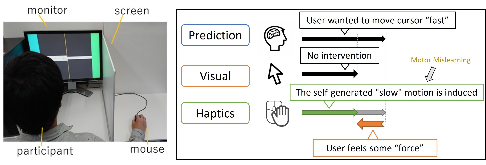

齊藤 寛人 / Hiroto Saito
Dr. Hiroto Saito is a project assistant professor in the Research Center for Advanced Science and Technology at the University of Tokyo, Japan. He received my Ph.D. in Frontier Media Science from Graduate School of Advanced Mathematical Sciences, Meiji University, Japan. His research interests include human motor perception and learning, cognitive science about self-attribution and embodiment, and the design of human-computer interaction.
2019年明治大学大学院先端数理科学研究科博士後期課程修了． 2019年東京大学先端科学技術研究センター特任研究員，2022年東京大学先端科学技術研究センター特任助教，現在に至る． 運動学習・運動知覚およびそれらの特性を利用したヒューマンコンピュータインタラクションの設計に関する研究に従事． 博士（理学）． ACM・情報処理学会・VR学会・認知科学会・モーターコントロール研究会各会員．
Works
Transparency in Human-Machine Mutual Action
Abstract
Recent advances in human-computer integration (HInt) have focused on the development of human-machine systems, where both human and machine autonomously act upon each other. However, a key challenge in designing such systems is augmenting the user’s physical abilities while maintaining their sense of self-attribution. This challenge is particularly prevalent when both human and machine are capable of acting upon each other, thereby creating a human-machine mutual action (HMMA) system. To address this challenge, we present a design framework that is based on the concept of transparency. We define transparency in HInt as the degree to which users can self-attribute an experience when machines intervene in the users’ action. Using this framework, we form a set of design guidelines and an approach for designing HMMA systems. By using transparency as our focus, we aim to provide a design approach for not only achieving human-machine fusion into a single agent, but also controlling the degrees of fusion at will. This study also highlights the effectiveness of our design approach through an analysis of existing studies that developed HMMA systems. Further development of our design approach is discussed, and future prospects for HInt and HMMA system designs are presented.
Publications
Hiroto Saito, Arata Horie, Azumi Maekawa, Seito Matsubara, Sohei Wakisaka, Zendai Kashino, Shunichi Kasahara, and Masahiko Inami. 2021. Transparency in Human-Machine Mutual Action. In Journal of Robotics and Mechatronics, Vol.33, No.5, pp. 987-1003. DOI:https://doi.org/10.20965/jrm.2021.p0987
Behind the Game
Abstract
When playing inter-personal sports games remotely, the time lag between user actions and feedback decreases the user’s performance and sense of agency. While computational assistance can improve performance, naive intervention independent of the context also compromises the user’s sense of agency. We propose a context-aware assistance method that retrieves both user performance and sense of agency, and we demonstrate the method using air hockey (a two-dimensional physical game) as a testbed. Our system includes a 2D plotter-like machine that controls the striker on half of the table surface, and a web application interface that enables manipulation of the striker from a remote location. Using our system, a remote player can play against a physical opponent from anywhere through a web browser. We designed the striker control assistance based on the context by computationally predicting the puck’s trajectory using a real-time captured video image. With this assistance, the remote player exhibits an improved performance without compromising their sense of agency, and both players can experience the excitement of the game.
Publications
Maekawa, Azumi, Hiroto Saito, Narin Okazaki, Shunichi Kasahara, and Masahiko Inami. 2021. Behind The Game: Implicit Spatio-Temporal Intervention in Inter-Personal Remote Physical Interactions on Playing Air Hockey. In ACM SIGGRAPH 2021 Emerging Technologies (SIGGRAPH ’21). Association for Computing Machinery, New York, NY, USA, Article 9, 1–4. DOI:https://doi.org/10.1145/3450550.3465348
Link
SIGGRAPH 2021 EMERGING TECHNOLOGIES DEMONSTRATE PANDEMIC PERSEVERANCE
The Tight Game
Abstract
Physical assistance can alleviate individual differences of abilities between players to create well-balanced inter-personal physical games. However, ‘explicit’ intervention can ruin the players’ sense of agency, and cause a loss of engagements in both the player and audience. We propose an implicit physical intervention system ”The Tight Game” for ‘Tug of War’ a one-dimensional physical game. Our system includes four force sensors connected to the rope and two hidden high torque motors, which provide realtime physical assistance. We designed the implicit physical assistance by leveraging human recognition of the external forces during physical actions. In The Tight Game, a pair of players engage in a tug of war, and believe that they are participating in a well balanced, tight game. In reality, however, an external system or person mediates the game, performing physical interventions without the players noticing.
Publications
Azumi Maekawa, Shunichi Kasahara, Hiroto Saito, Daisuke Uriu, Gowrishankar Ganesh, and Masahiko Inami. 2020. The Tight Game: Implicit Force Intervention in Inter-personal Physical Interactions on Playing Tug of War. In ACM SIGGRAPH 2020 Emerging Technologies (SIGGRAPH ’20). Association for Computing Machinery, New York, NY, USA, Article 10, 1–2. DOI:https://doi.org/10.1145/3388534.3407301
Link
JST ERATO Inami JIZAI body project - project page
SIGGRAPH 2020 TO SPOTLIGHT 20 TRANSFORMATIVE, EMERGING TECHNOLOGIES
Analysis of the Causes of Pseudo-haptics Using the Motion Mislearning during Steering Task
Abstract
Previous studies described that Pseudo-haptics is a sensory illusion caused by the conflict between visual and haptic perception. However, this conflict could be interpreted as a result of voluntary movement. It remains unclear as to why the visuo-haptic conflict is interpreted as a passive force, not a voluntary movement. We hypothesized that the illusion of the passive force is caused by the conflict between visual feedback and motor prediction, not the haptic perception. To test this hypothesis, we performed an experiment using motor mislearning to modulate the motion of the voluntary movement that causes a conflict between motor prediction and visual feedback even if maintained congruence between visual and haptic feedback. In this experiment, subjects informed the magnitude of passive force felt subjectively during the steering task using the mouse. As a result, we confirmed the possibility that the conflict between motor prediction and visual feedback causes Pseudo-haptics.
Publications
齊藤寛人, 福地健太郎. 運動伝染が生み出す運動予測の変調を利用したPseudo-haptics の生起要因の分析, 情報処理学会 インタラクション2019論文集 (インタラクション2019 一般講演), pp.112-121. PDF
The Effect of Predictability of Visual Motion from Motor Commands on the Recognition Process of Self-Attribution
Abstract
The recognition process of self-attribution, which is mainly caused by congruence between visual and proprioceptive information and between visual information and prediction from motor commands, has been extensively studied. However, it is still unclear as to which congruence plays the primary role in the process during the voluntary movements. We conducted a user study that distinguishes proprioceptive information and prediction from motor commands by displaying the modified images of the participants' hands in various rotation angles; this introduced the conflict between visual and proprioceptive information. The hand motions of the participants were restricted so that they could predict the visual motion of the images of their hands by the motor command even while the images were rotated. The result indicates that motion prediction plays a primary role in the recognition process of self-attribution, and this predictability depends on the motion pattern and appearance of the hand images.
Publications
Hiroto Saito and Kentaro Fukuchi. 2018. The Effect of Predictability of Visual Motion from Motor Commands on the Recognition Process of Self-Attribution. In Extended Abstracts of the 2018 CHI Conference on Human Factors in Computing Systems (CHI EA '18). Association for Computing Machinery, New York, NY, USA, Paper LBW124, 1–6. DOI:https://doi.org/10.1145/3170427.3188512
齊藤寛人, 福地健太郎. 視覚的運動の予測可能性が自己帰属感の生起過程に及ぼす影響の調査, ヒューマンインタフェース学会論文誌, 2018, Vol.20, No.3, pp.301-310. DOI:https://doi.org/10.11184/his.20.3_301